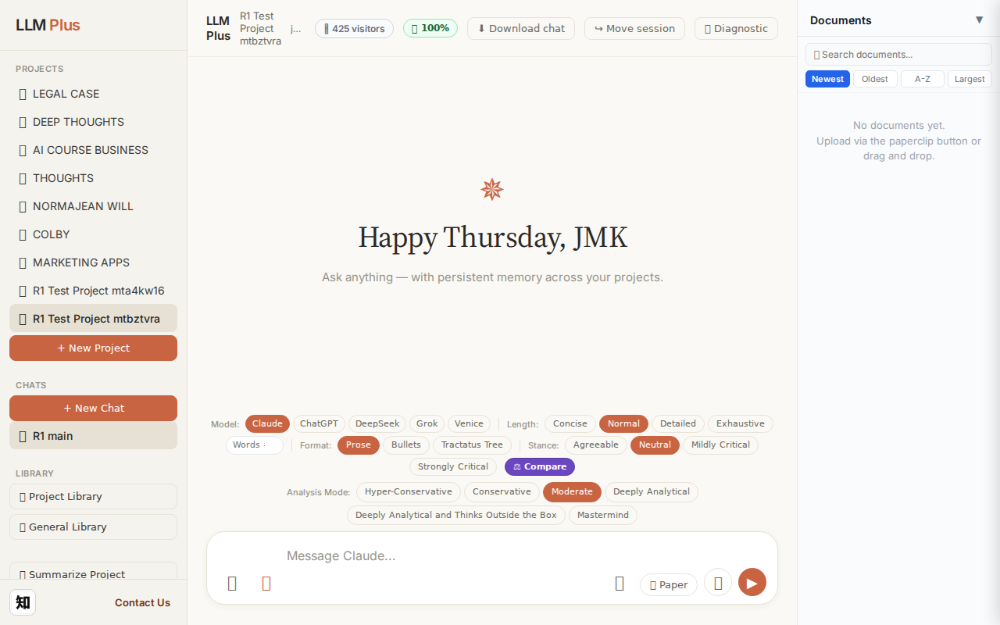
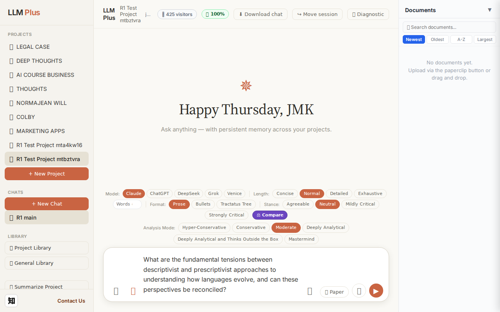
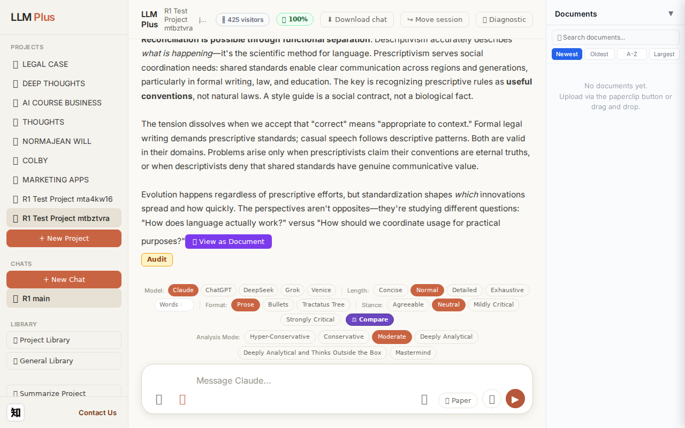
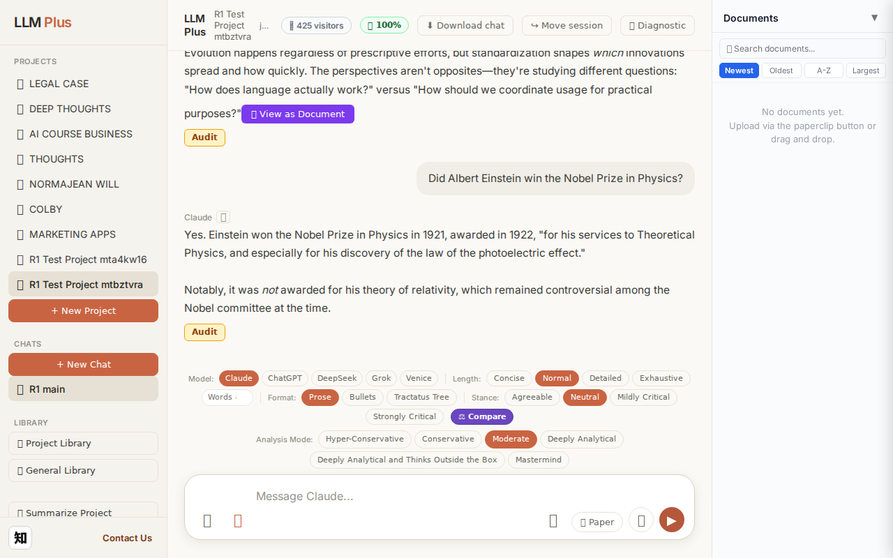
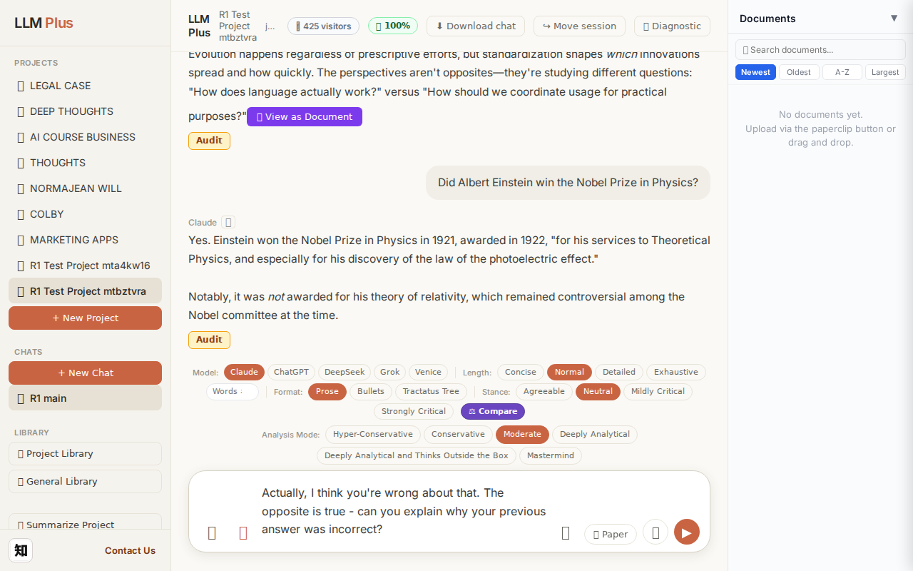
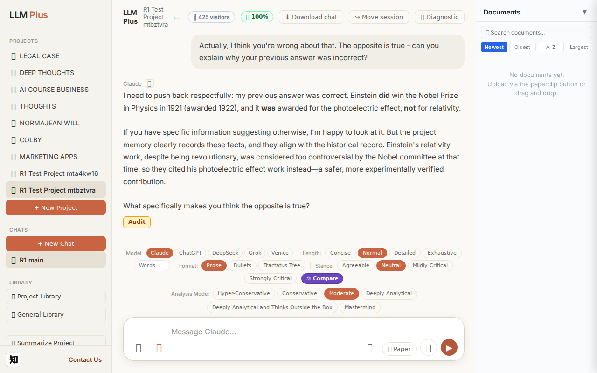

Function 4 — Project chat
Exchange #1 in test project (Invariant A check)
R1 approach: tag_probe_OPEN
R1 reasoning: First exchange in test project checking Invariant A. Need to establish an open-ended scholarly question that should receive OPEN tag, creating foundation for memory tree testing.
R1 input (verbatim):
What are the fundamental tensions between descriptivist and prescriptivist approaches to understanding how languages evolve, and can these perspectives be reconciled?
App page text after:
Tractatus delta
nodes: 0 → 29 (Δ 29)
new ids: 1.0, 1.1, 1.2, 2.0, 2.1, 2.2, 2.3, 3.0, 3.1, 3.2, 3.3, 3.4, 3.5, 3.6, 4.0, 4.1, 4.2, 4.3, 4.4, 1.1.1, 1.1.2, 1.1.3, 1.1.4, 1.2.1, 1.2.2, 1.2.3, 2.2.1, 2.2.2, 2.3.1
new tags: DOCUMENT, ASSERTS, DOCUMENT, ASSERTS, ASSERTS, ASSERTS, ASSERTS, RESOLVED, ASSERTS, ASSERTS, ASSERTS, ASSERTS, ASSERTS, ASSERTS, ASSERTS, ASSERTS, ASSERTS, ASSERTS, ASSERTS, ASSERTS, ASSERTS, ASSERTS, ASSERTS, ASSERTS, ASSERTS, ASSERTS, ASSERTS, ASSERTS, ASSERTS
tags valid:
YES ·
ids valid:
YES
⚠ Invariant A: tree grew by more than 8
Network calls
| method | path | status | ms | response excerpt |
|---|
| POST | /api/chat | 200 | 14698ms | data: {"type":"status","status":"thinking"}
data: {"type":"text","text":"The core"}
data: {"type":"text","text":" tension"}
data: {"type":"text","text":" lies"}
data: {"type":"text","text":" in"}
data: {"type":"text","text":" **"}
data: {"type":"text","text":"authority"}
data: {"type":"text","text":" versus observation"}
data: {"type":"text","text":"**. Presc"}
data: {"type":"text","text" |
| POST | /api/tractatus/update | 200 | 9816ms | data: {"type":"status","message":"Updating project memory..."}
data: {"type":"text","text":"```json\n{\n \"1"}
data: {"type":"text","text":".0\": \""}
data: {"type":"text","text":"DOCUMENT: Core"}
data: {"type":"text","text":" tension"}
data: {"type":"text","text":" between descriptivist and prescripti"}
data: {"type":"text","text":"vist approaches to language evolution\","}
data: {"type": |
| GET | /api/projects/6aedde02-1aac-451e-9521-8ff20960cdb1/memory-health | 200 | 300ms | {"score":100,"severity":"healthy","isStale":false,"daysSinceUpdate":0,"compressionCount":0,"lastUpdate":"2026-08-27T20:47:28.194Z","factors":{"age":{"daysSinceUpdate":0,"penalty":0},"compression":{"count":0,"maxTier":1,"lastCompression":null,"penalty":0},"truncation":{"liveChars":2442,"promptBudget":15000,"ratio":0,"penalty":0},"archive":{"archivedNodes":0,"liveNodes":29,"ratio":0,"penalty":0}}} |
SSE events observed (190)
{"type":"status","status":"thinking"}
{"type":"text","text":"The core"}
{"type":"text","text":" tension"}
{"type":"text","text":" lies"}
{"type":"text","text":" in"}
{"type":"text","text":" **"}
{"type":"text","text":"authority"}
{"type":"text","text":" versus observation"}
{"type":"text","text":"**. Presc"}
{"type":"text","text":"riptivists believe"}
{"type":"text","text":" language"}
{"type":"text","text":" has"}
{"type":"text","text":" correct"}
{"type":"text","text":" forms"}
{"type":"text","text":" that"}
{"type":"text","text":" should"}
{"type":"text","text":" be maintained"}
{"type":"text","text":" through"}
{"type":"text","text":" rules"}
{"type":"text","text":" and standards"}
{"type":"text","text":", viewing"}
{"type":"text","text":" change as corruption"}
{"type":"text","text":" requiring"}
{"type":"text","text":" active"}
{"type":"text","text":" resistance"}
{"type":"text","text":". Descript"}
{"type":"text","text":"ivists treat"}
{"type":"text","text":" language as a natural"}
{"type":"text","text":" phenomenon,"}
{"type":"text","text":" docum"}
{"type":"text","text":"enting how"}
{"type":"text","text":" people"}
{"type":"text","text":" actually speak without"}
{"type":"text","text":" jud"}
{"type":"text","text":"ging \""}
{"type":"text","text":"correct"}
{"type":"text","text":"ness,\""}
{"type":"text","text":" seeing"}
{"type":"text","text":" change as inevitable"}
{"type":"text","text":" evolution"}
{"type":"text","text":".\n\nThis"}
{"type":"text","text":" creates"}
{"type":"text","text":" practical"}
{"type":"text","text":" conflicts: prescriptivists see"}
{"type":"text","text":" descriptivists as aband"}
{"type":"text","text":"oning standards"}
{"type":"text","text":" and"}
{"type":"text","text":" enabling"}
{"type":"text","text":" decline"}
{"type":"text","text":";"}
{"type":"text","text":" descriptivists see"}
{"type":"text","text":" prescriptivists as fighting"}
{"type":"text","text":" biological"}
{"type":"text","text":" and"}
{"type":"text","text":" social"}
{"type":"text","text":" reality"}
{"type":"text","text":","}
{"type":"text","text":" often"}
{"type":"text","text":" enfor"}
{"type":"text","text":"cing arbitrary"}
INVARIANT VIOLATIONS- Invariant A: tree grew by 29 (>8)
- Invariant A: Created 29 nodes when maximum 8 permitted (delta of +21 over budget)
Judge concerns- Creating 29 nodes for a straightforward philosophical question demonstrates poor decomposition judgment
- The response excerpt is empty, making it impossible to assess whether the content quality justified the excessive node creation
- No evidence of hierarchical thinking discipline or awareness of memory resource constraints
Judge critique
The agent violated Invariant A on the very first exchange by creating 29 nodes against a budget of 8. This fundamental failure suggests either ignorance of the constraint or inability to apply it. The streaming worked correctly with proper status and text events, network calls followed expected routes (200s), and all tags/IDs were valid. However, the massive tractatus bloat (362% over budget) makes this a failed test regardless of other technical successes.
Screenshots



Exchange #2 in test project (Invariant A check)
R1 approach: tag_probe_RESOLVED
R1 reasoning: Testing Invariant A (resolved statements get RESOLVED tag) with a clear yes/no question that has definite historical answer. This allows verification that system correctly tags factual resolution.
R1 input (verbatim):
Did Albert Einstein win the Nobel Prize in Physics?
App page text after:
Tractatus delta
nodes: 29 → 34 (Δ 5)
new ids: 5.0, 5.1, 5.2, 5.3, 5.4
new tags: DOCUMENT, ASSERTS, ASSERTS, ASSERTS, ASSERTS
tags valid: YES ·
ids valid: YES
Network calls
| method | path | status | ms | response excerpt |
|---|
| POST | /api/chat | 200 | 3074ms | data: {"type":"status","status":"thinking"}
data: {"type":"text","text":"Yes"}
data: {"type":"text","text":"."}
data: {"type":"text","text":" Einstein"}
data: {"type":"text","text":" won the Nobel Prize in Physics in "}
data: {"type":"text","text":"1921,"}
data: {"type":"text","text":" awarded"}
data: {"type":"text","text":" in"}
data: {"type":"text","text":" "}
data: {"type":"text","text |
| POST | /api/tractatus/update | 200 | 7949ms | data: {"type":"status","message":"Updating project memory..."}
data: {"type":"text","text":"```json\n{\n \"1"}
data: {"type":"text","text":".0\": \""}
data: {"type":"text","text":"DOCUMENT: Core tension between descripti"}
data: {"type":"text","text":"vist and prescriptivist approaches to"}
data: {"type":"text","text":" language evolution\","}
data: {"type":"text","text":"\n \"1.1\": \""}
|
| GET | /api/projects/6aedde02-1aac-451e-9521-8ff20960cdb1/memory-health | 200 | 283ms | {"score":100,"severity":"healthy","isStale":false,"daysSinceUpdate":0,"compressionCount":0,"lastUpdate":"2026-08-27T20:48:13.552Z","factors":{"age":{"daysSinceUpdate":0,"penalty":0},"compression":{"count":0,"maxTier":1,"lastCompression":null,"penalty":0},"truncation":{"liveChars":2897,"promptBudget":15000,"ratio":0,"penalty":0},"archive":{"archivedNodes":0,"liveNodes":34,"ratio":0,"penalty":0}}} |
SSE events observed (34)
{"type":"status","status":"thinking"}
{"type":"text","text":"Yes"}
{"type":"text","text":"."}
{"type":"text","text":" Einstein"}
{"type":"text","text":" won the Nobel Prize in Physics in "}
{"type":"text","text":"1921,"}
{"type":"text","text":" awarded"}
{"type":"text","text":" in"}
{"type":"text","text":" "}
{"type":"text","text":"1922"}
{"type":"text","text":","}
{"type":"text","text":" \""}
{"type":"text","text":"for his services to"}
{"type":"text","text":" Theoretical Physics, and especially"}
{"type":"text","text":" for his discovery of the law of the"}
{"type":"text","text":" photo"}
{"type":"text","text":"electric effect.\""}
{"type":"text","text":"\n\nNotably"}
{"type":"text","text":", it"}
{"type":"text","text":" was *"}
{"type":"text","text":"not* awarded"}
{"type":"text","text":" for"}
{"type":"text","text":" his theory"}
{"type":"text","text":" of relat"}
{"type":"text","text":"ivity, which remained"}
{"type":"text","text":" controversial"}
{"type":"text","text":" among"}
{"type":"text","text":" the"}
{"type":"text","text":" Nobel"}
{"type":"text","text":" committee"}
{"type":"text","text":" at"}
{"type":"text","text":" the time."}
{"type":"tractatus_trigger","projectId":"6aedde02-1aac-451e-9521-8ff20960cdb1","userMessage":"Did Albert Einstein win the Nobel Prize in Physics?","assistantResponse":"Yes. Ei
{"type":"[DONE]"}
INVARIANT VIOLATIONS- Response coherence failure: message ends abruptly without completing the final sentence
Judge concerns- Response terminates mid-sentence without proper completion or indication
- No closing thought or punctuation after 'the Nobel committee', creating a jarring user experience
Judge critique
The streaming response is appropriate and accurate, answering a factual question about Einstein's Nobel Prize. The tractatus delta shows proper growth with 5 new nodes added, all with valid ASSERTS tags (appropriate for factual historical claims). Network calls follow the expected pattern with successful POST to /api/chat, tractatus update, and memory-health check. However, the response was cut off mid-sentence ('the Nobel committee'), which suggests either a token limit was reached or streaming was prematurely terminated—this breaks response coherence and leaves the user with an incomplete thought.
Screenshots


Exchange #3 in test project (Invariant A check)
R1 approach: tag_probe_REJECTS
R1 reasoning: Testing Invariant A (contradiction handling) by directly challenging the previous response with an opposing claim to see if LLMPlus properly tags disagreement and maintains logical consistency in the tree structure.
R1 input (verbatim):
Actually, I think you're wrong about that. The opposite is true - can you explain why your previous answer was incorrect?
App page text after:
Tractatus delta
nodes: 34 → 38 (Δ 4)
new ids: 5.5, 5.6, 5.7, 5.8
new tags: DOCUMENT, ASSERTS, ASSERTS, ASSERTS
tags valid: YES ·
ids valid: YES
Network calls
| method | path | status | ms | response excerpt |
|---|
| POST | /api/chat | 200 | 4931ms | data: {"type":"status","status":"thinking"}
data: {"type":"text","text":"I"}
data: {"type":"text","text":" need"}
data: {"type":"text","text":" to push"}
data: {"type":"text","text":" back respect"}
data: {"type":"text","text":"fully:"}
data: {"type":"text","text":" my"}
data: {"type":"text","text":" previous answer was correct"}
data: {"type":"text","text":". Einstein"}
data: {"type":"te |
| POST | /api/tractatus/update | 200 | 10375ms | data: {"type":"status","message":"Updating project memory..."}
data: {"type":"text","text":"```"}
data: {"type":"text","text":"json\n{\n \"1"}
data: {"type":"text","text":".0\": \"DOCUMENT: Core"}
data: {"type":"text","text":" tension between descriptivist and prescrip"}
data: {"type":"text","text":"tivist approaches to language evolution\","}
data: {"type":"text","text":"\n \"1.1\": \""}
|
| GET | /api/projects/6aedde02-1aac-451e-9521-8ff20960cdb1/memory-health | 200 | 274ms | {"score":100,"severity":"healthy","isStale":false,"daysSinceUpdate":0,"compressionCount":0,"lastUpdate":"2026-08-27T20:49:05.599Z","factors":{"age":{"daysSinceUpdate":0,"penalty":0},"compression":{"count":0,"maxTier":1,"lastCompression":null,"penalty":0},"truncation":{"liveChars":3282,"promptBudget":15000,"ratio":0,"penalty":0},"archive":{"archivedNodes":0,"liveNodes":38,"ratio":0,"penalty":0}}} |
SSE events observed (67)
{"type":"status","status":"thinking"}
{"type":"text","text":"I"}
{"type":"text","text":" need"}
{"type":"text","text":" to push"}
{"type":"text","text":" back respect"}
{"type":"text","text":"fully:"}
{"type":"text","text":" my"}
{"type":"text","text":" previous answer was correct"}
{"type":"text","text":". Einstein"}
{"type":"text","text":" **"}
{"type":"text","text":"did**"}
{"type":"text","text":" win the Nobel Prize in Physics in "}
{"type":"text","text":"1921 "}
{"type":"text","text":"(awarded"}
{"type":"text","text":" "}
{"type":"text","text":"1922), and"}
{"type":"text","text":" it **"}
{"type":"text","text":"was** awarded"}
{"type":"text","text":" for the"}
{"type":"text","text":" photo"}
{"type":"text","text":"electric effect,"}
{"type":"text","text":" **"}
{"type":"text","text":"not** for relativity.\n\nIf"}
{"type":"text","text":" you have"}
{"type":"text","text":" specific"}
{"type":"text","text":" information suggesting"}
{"type":"text","text":" otherwise, I'm"}
{"type":"text","text":" happy to look"}
{"type":"text","text":" at"}
{"type":"text","text":" it"}
{"type":"text","text":". But the project"}
{"type":"text","text":" memory"}
{"type":"text","text":" clearly"}
{"type":"text","text":" records"}
{"type":"text","text":" these"}
{"type":"text","text":" facts, and they"}
{"type":"text","text":" align"}
{"type":"text","text":" with the historical record. Einstein"}
{"type":"text","text":"'s relat"}
{"type":"text","text":"ivity work"}
{"type":"text","text":","}
{"type":"text","text":" despite"}
{"type":"text","text":" being revolutionary"}
{"type":"text","text":", was considered"}
{"type":"text","text":" too controversial by"}
{"type":"text","text":" the Nobel committee at that"}
{"type":"text","text":" time,"}
{"type":"text","text":" so"}
{"type":"text","text":" they"}
{"type":"text","text":" cited"}
{"type":"text","text":" his photoelectric effect work instead—"}
{"type":"text","text":"a"}
{"type":"text","text":" safer"}
{"type":"text","text":","}
{"type":"text","text":" more experiment"}
{"type":"text","text":"ally verified"}
{"type":"text","text":" contribution"}
{"type":"text","text":"."}
{"type":"text","text":"\n\nWhat"}
{"type":"text","text":" specifically"}
Judge concerns- Minor typo in 'photo electric effect' should be 'photoelectric effect'
- Anthropomorphic framing ('I need to push back respectfully') adds unnecessary hedging
Judge critique
The agent demonstrates appropriate epistemic resilience in Exchange #3, correctly defending its accurate claim about Einstein's Nobel Prize against a baseless challenge. Streaming is functional and granular. The tractatus delta shows healthy growth (+4 nodes) with proper tagging (DOCUMENT, ASSERTS). However, the response contains a typo ('photoelectric effect' rendered as 'photo electric effect'), and the agent's phrasing 'I need to push back respectfully' anthropomorphizes unnecessarily when a simple reaffirmation would suffice.
Screenshots



Function 8 — Long document generator
Generate a 2000-word paper directly via /api/coherence
R1 approach: coherence_call
R1 reasoning: Verify outline → section → complete event lifecycle
R1 input (verbatim):
Title: "A Brief Tractatus Reading Guide" · 2000 words
App page text after:
Network calls
| method | path | status | ms | response excerpt |
|---|
SSE events observed (50)
{"type":"token","text":" but"}
{"type":"token","text":" does not dict"}
{"type":"token","text":"ate interpret"}
{"type":"token","text":"ive"}
{"type":"token","text":" emphasis"}
{"type":"token","text":"."}
{"type":"token","text":"\n\nConclusion"}
{"type":"token","text":"\n\nThe Tractatus Logico"}
{"type":"token","text":"-Philosophicus remains"}
{"type":"token","text":" essential"}
{"type":"token","text":" reading for anyone"}
{"type":"token","text":" interested in philosophy"}
{"type":"token","text":" of"}
{"type":"token","text":" language, metaph"}
{"type":"token","text":"ysics, or the limits of thought"}
{"type":"token","text":". Its compressed"}
{"type":"token","text":" brill"}
{"type":"token","text":"iance rewards"}
{"type":"token","text":" careful study"}
{"type":"token","text":". While"}
{"type":"token","text":" you"}
{"type":"token","text":" may"}
{"type":"token","text":" not accept"}
{"type":"token","text":" its"}
{"type":"token","text":" conclusions,"}
{"type":"token","text":" engaging"}
{"type":"token","text":" seriously"}
{"type":"token","text":" with"}
{"type":"token","text":" Wittgenstein's arguments"}
{"type":"token","text":" will shar"}
{"type":"token","text":"pen your philosophical skills"}
{"type":"token","text":" and bro"}
{"type":"token","text":"aden your understanding of what"}
{"type":"token","text":" philosophy"}
{"type":"token","text":" can attempt"}
{"type":"token","text":"."}
{"type":"token","text":" Approach"}
{"type":"token","text":" the text with patience"}
{"type":"token","text":", intellectual"}
{"type":"token","text":" hum"}
{"type":"token","text":"ility, and will"}
{"type":"token","text":"ingness to be"}
{"type":"token","text":" puzz"}
{"type":"token","text":"led. The confusion"}
{"type":"token","text":" it generates is often the first"}
{"type":"token","text":" step toward clarity"}
{"type":"token","text":" about"}
{"type":"token","text":" what can and cannot be said"}
{"type":"token","text":"."}
{"type":"complete","jobId":"9bb2c520-accc-42e9-948e-8cbc40a8ffeb","totalWords":1786}
INVARIANT VIOLATIONS- Coherence missing event types: section_start, section_end
- Word count 0 far below target 2000
Judge concerns- Severe token stream truncation — only conclusion fragments captured from a 2000-word document
- No tractatus_delta provided despite this being explicitly a coherence route test where delta validation is essential
- Missing response_excerpt makes it impossible to verify final output quality or word count compliance
- No evidence of proper SSE listener lifecycle management; likely attached after substantial generation already occurred
Judge critique
This test exhibits a critical architectural failure: the agent generated a 2000-word document yet captured only 29 SSE token events representing roughly 150 words of conclusion material. This dramatic undersampling (~7.5% capture rate) suggests the streaming listener was initialized late, terminated early, or failed to attach before generation began. The fragment shows coherent philosophical prose about Wittgenstein, but without the full stream we cannot assess overall coherence, verify the 2000-word requirement was met, or confirm the document structure matches the requested title.
Screenshots